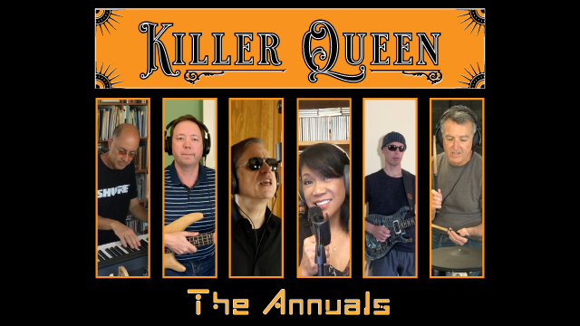

| HOME | MUSICIAN | SONG WRITER | PRODUCER |
| ALBUMS | CHRISTMAS SONGS | VIDEOS | COLLABORATIONS | BEHIND THE SCENES |
|

Behind The Scenes #2 One of the most recognizable things about Queen is their exquisite vocal harmonies. They are lush, often unexpected and interwoven as counterpoints to the song melody. They are also usually 3-part. Covering a Queen song with all the vocal parts can be challenging. Most people find it pretty easy to pick out the melody of a song by just listening and singing along. Two-part harmonies (that is, a melody and a single harmony) are not too hard to pick out, though not as easy as just the melody. But 3-part harmonies, especially when 4 or 5 instruments are being played at the same time, can be notoriously difficult to reverse engineer. Sometimes, you can hear one or two notes clearly but there's that third part that's just not quite loud enough. You know it's there but with all the other voices and instruments playing you just can't quite make it out. To work out harmonies, bands do vocal rehearals. The entire rehearsal is spent working out the vocal parts. Typically, only the singers come to a vocal rehearsal, that way we don't bore the other players to death. Tish and I had a vocal rehearsal to work on the songs in the Solstice setlist. When we got to Killer Queen we listened to Queen's record. Hearing all those cool little vocal interjections during the verses (3-part harmonies, all of them) I remember thinking "man, this could take a while." When it came time to add the harmonies to the shelter-in-place video, I tried to work out all 3 parts by just singing along with Queen's recording. It only took a few seconds to realize this was never going to work. So, I tried something that I often do when I'm working out 3-part harmonies for vocals on songs that Matt and I write -- I played and experimented with the harmonies on the piano. Since we had already completed the instrumentation, I started by adding the all parts that I knew were correct. I recorded them as individual notes on the piano. Then I could go to a section that was missing a harmony note, listen to the instrumental accompaniment and the harmony parts I had already recorded, and experiment. I would play different triads that contained the 2 known notes, trying out different third notes until I hit upon something that sounded good. Then I recorded that third note and moved on to the next unknown part. It didn't take too long before I had full triads for all harmony parts for the whole song. The rest was easy. For the high harmony part, I simply played back the song with the high note of each triad turned on and the other two notes turned off, quickly memorized that melody, then sang it and recorded it. Repeat the same process for the middle and lower notes, and we're done! I have found this to be a very effective technique. You can try lots of different triads very quickly. It's possible to do this without the piano -- just record your voice one note at a time and experiment until it sounds correct -- but it takes, literally, 10 to 50 times longer. I'd be interested to hear what people think this approach. Also, if you know of another way to work out harmonies, or if you see an improvement to what I've described, please reply. I'd love to learn any new techniques that might work better. |